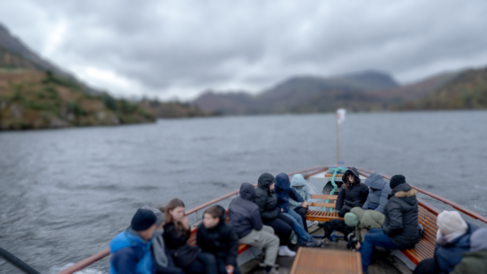
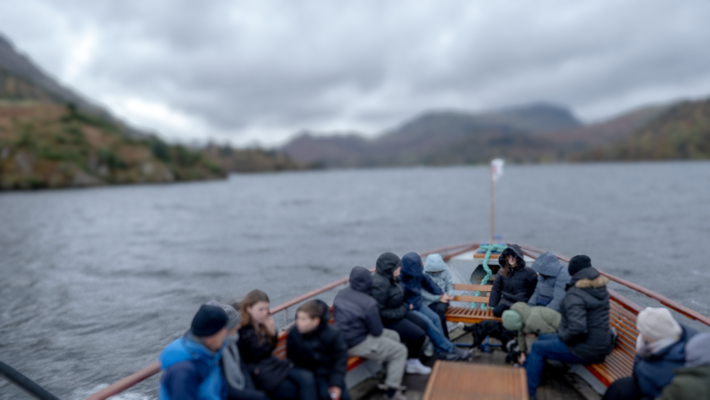

ABOUT
Non-Serious Practice Series
Some Place, United Kingdom
Natural Element
Producer: Yi Huang
Content: Seeking inspiration for the project, everything felt both tedious and novel. Departing from London, I journeyed through Manchester, the Lake District, Dumfries, Douglas Castle, and Parton Church, passing through Dalmellington, Ayr, Glasgow, and Edinburgh.
In tracing Maxwell's footsteps, my destiny seemed irrevocably sealed.

Format: Photography
Tech: Digital images
非严肃实践系列
大不列颠某些地方
自然元素
制作人：黄熠
内容：命运推动着我独自从南至北穿越大不列颠，不知是否电磁波一直跟随着我……

形式：摄影图像
技术：数字修改


 



自检：
Self Reflection:
© 2025 All Rights Reserved.